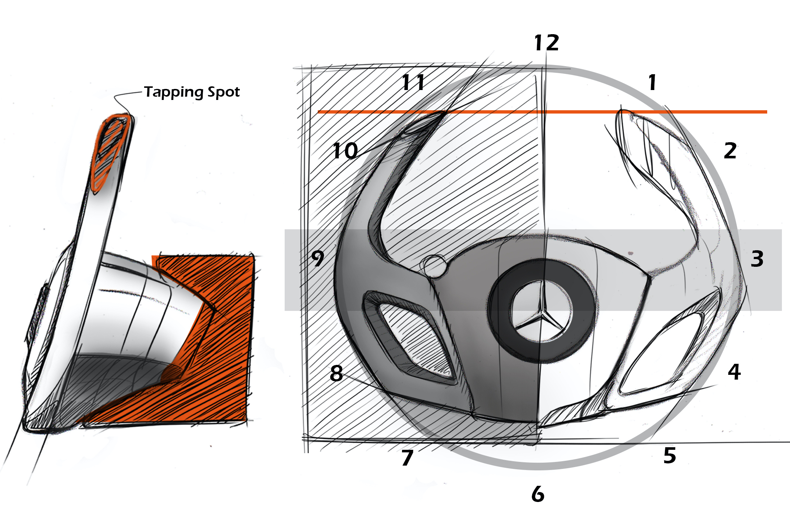
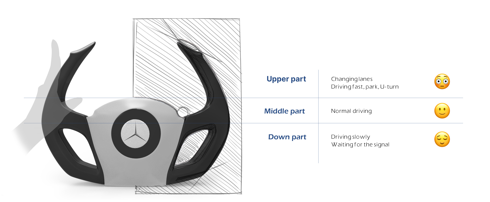
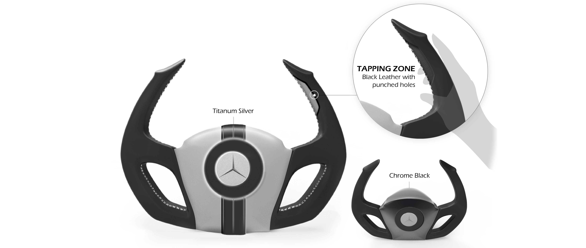

For my degree project, I proposed a design solution to provide fulfilling music experience while driving a car.
Steering wheel
Steering wheel design was followed as: inspiration, sketch ideation, digital and physical prototyping. From the research, the upper part of steering wheel (image: 11-12-1) was not commonly touched or grabbed by users. Also, it was actually safer to grab 9 and 3, so a shape of the steering wheel was designed as 'D' form.
Considering the fact that drivers grab different parts of the steering wheel, thickness, form and materials could be defined.
Tapping zone for tactual feedback
Users could feel vibration and interact with the steering wheel by tapping it. Giving intuitive feedback was intended to improve their music experience.
User interface design for visual feedback
Also, a digital cluster was designed to maximize this enjoyable experience. As one of multiple modes, such as 'Driving mode', 'Eco mode', users could select this 'Music mode' and fully interact with music. Since 'Safety' should be always the most critical aspect while driving, it was designed not to disturb their main objective, which is driving itself.